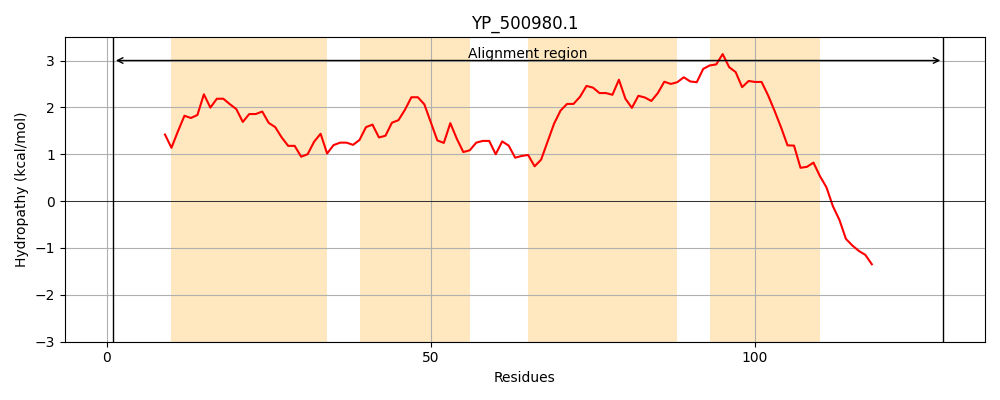
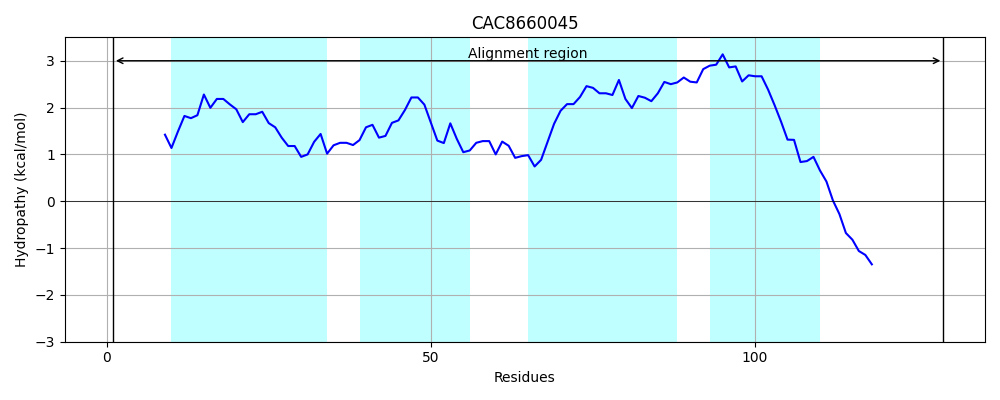
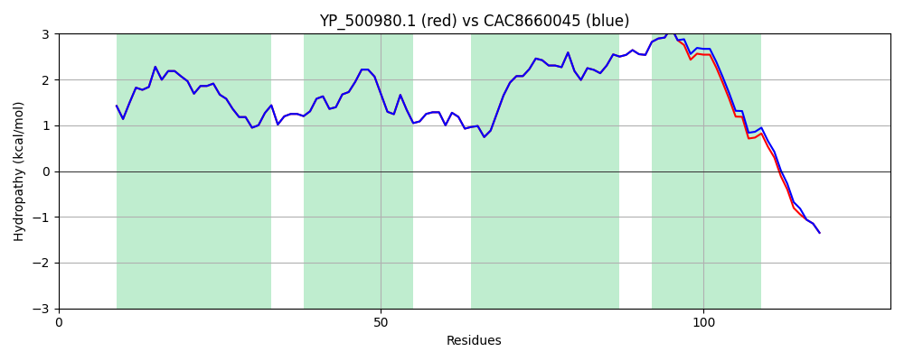

Hit Accession: CAC8660045
Hit TCID: 2.A.134.1.2
Hit Description: gnl|BL_ORD_ID|2791 gnl|TC-DB|CAC8660045.1|2.A.134.1.2 Uncharacterised protein [Staphylococcus aureus]
Mach Len: 129
e:0.000000
Query TMS Count : 4
Hit TMS Count: 4
TMS-Overlap Score: 4.250000
Predicted Substrates:CHEBI:30143;lithium(1+), CHEBI:9175;sodium(1+), CHEBI:8345;potassium(1+), CHEBI:5584;hydron
BLAST Alignment:
| Protein Hydropathy Plots: | |
|---|---|
|  |  |
Pairwise Alignment-Hydropathy Plot: | |
|  | |